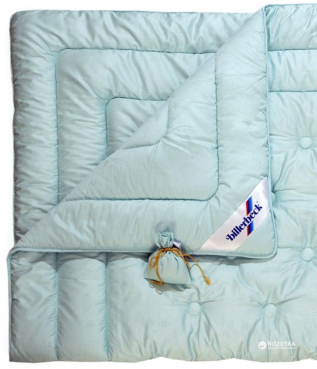

Одеяло Billerbeck Версаль и Псевдоклассы
Цена 2 600 грн.
Описание
Стандартное одеяло Billerbeck Версаль подойдет для использования в не жарких помещениях и в прохладное время года. Овечья шерсть в сочетании с хлопковым чехлом создает идеальные условия для комфортного отдыха. Натуральная чесаная шерсть имеет свойство впитывать в себя и отдавать во внешнюю среду влаги до 30% собственного веса, не создавая при этом ощущения сырости в постели. Вычесывание придает наполнителю легкость и пушистость, не позволяет сбиваться. А это в свою очередь делает изделия еще теплее.
Характеристики
- Размер 140х205см
- Вес 1500г
- Цвет зеленый
- Материал чехла 100%хлопок